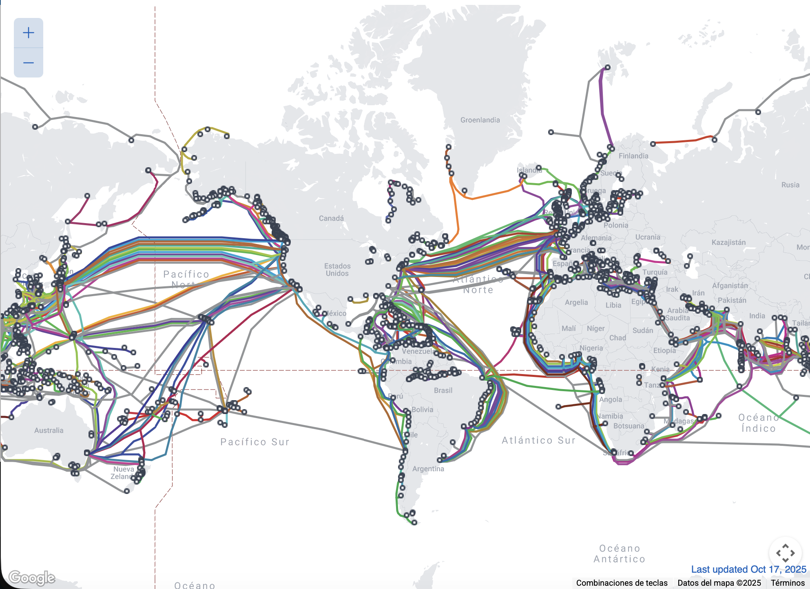
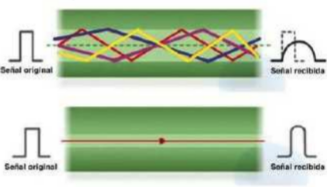
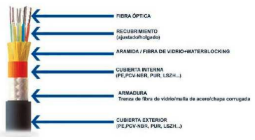

Fibra óptica¶
La fibra óptica es un medio de transmisión basado en un hilo extremadamente fino (aproximadamente del grosor de un cabello humano) fabricado en vidrio o plástico de alta pureza. Su estructura consta de:
- Núcleo central: donde se propaga la luz
- Revestimiento primario: sustancia protectora (generalmente acrilato) que recubre directamente la fibra
- Revestimiento secundario: capa exterior que proporciona rigidez y protección contra curvaturas excesivas (típicamente nailon o poliéster)
Principio de funcionamiento:
La fibra óptica transmite información utilizando luz que se propaga a través del núcleo mediante el fenómeno de reflexión total interna. La luz se inyecta en un extremo del cable y rebota en las paredes del núcleo hasta llegar al extremo opuesto, manteniéndose confinada gracias a la diferencia de índices de refracción entre el núcleo y el revestimiento.
La clave: el índice de refracción
El núcleo tiene un índice de refracción mayor que el del revestimiento que lo rodea (cladding). Cuando la luz incide sobre esa frontera con un ángulo superior al ángulo crítico, no se refracta hacia fuera: se refleja por completo hacia dentro. Ese es el fenómeno de reflexión total interna que describe la ley de Snell, y es lo que mantiene la luz "atrapada" kilómetro tras kilómetro.
Consecuencia directa: si doblas la fibra con un radio demasiado pequeño, el ángulo de incidencia deja de cumplir esa condición, la luz escapa por la curva y el enlace pierde potencia o se cae. Por eso todo cable de fibra tiene un radio de curvatura mínimo que hay que respetar.
Características destacadas:
Este medio presenta pérdidas de señal extremadamente bajas en largas distancias y ofrece una capacidad de transmisión muy elevada, lo que lo convierte en la opción ideal para cubrir grandes distancias. Un ejemplo notable son las redes transoceánicas que conectan continentes mediante extensas redes de cables submarinos de fibra óptica.
Cable submarino de fibra óptica¶
Destacando la importancia de este medio como infraestructura fundamental para las comunicaciones internacionales. Estas redes interconectan continentes y permiten la transmisión de grandes volúmenes de datos a alta velocidad y con mínima atenuación, haciendo posible la conectividad mundial moderna.
A continuación, se presenta una visualización estática de la red global de cables submarinos de fibra óptica, seguida de un enlace interactivo que permite explorar en tiempo real la infraestructura mundial de comunicaciones submarinas:


MAPA INTERACTIVO
Instrucciones de uso:
- Haz clic en el botón superior para abrir el mapa en una nueva pestaña
- Explora las rutas de cables submarinos haciendo zoom y desplazándote por el mapa
- Selecciona cualquier cable para ver información detallada (longitud, capacidad, empresas propietarias)
- Identifica los puntos de amarre y las rutas que conectan España con otros continentes
Estos cables submarinos de fibra óptica constituyen la columna vertebral de las comunicaciones globales modernas, formando una red intercontinental que conecta todos los continentes habitados del planeta.
DATO CLAVE:
Recorriendo miles de kilómetros por las profundidades oceánicas, estos cables transportan más del 99% del tráfico de datos internacional
Aplicaciones críticas que dependen de esta infraestructura:
- Comunicaciones telefónicas: Llamadas internacionales y servicios de voz
- Internet global: Navegación web, streaming y servicios en la nube
- Transacciones financieras: Operaciones bancarias y mercados internacionales
- Comunicaciones gubernamentales: Diplomacia y seguridad nacional
- Medios de comunicación: Distribución de contenido audiovisual global
Características técnicas destacadas:
- Longitud total: Más de 1.3 millones de kilómetros de cables submarinos en funcionamiento
- Profundidad: Instalados a profundidades de hasta 8.000 metros bajo el nivel del mar
- Capacidad: Cada cable puede transportar terabits de datos por segundo
- Durabilidad: Diseñados para operar durante 25 años en condiciones extremas
Impacto económico cuantificable:
- Valor de mercado: La industria de cables submarinos mueve más de 15.000 millones de dólares anuales
- Dependencia crítica: Más del 99% del tráfico de datos internacional transita por estos cables
- Interrupción costosa: Una sola ruptura puede causar pérdidas de millones de dólares por hora
- Inversión continua: Se instalan nuevos cables cada año con inversiones multimillonarias
Ventajas técnicas sobre alternativas:
| Aspecto | Cables Submarinos | Satélites | Diferencias |
|---|---|---|---|
| Latencia | 50-100 ms | 250-600 ms | 5-12x menor |
| Capacidad | Terabits/s | Gigabits/s | 1000x mayor |
| Costo por bit | Muy bajo | Alto | 10-100x menor |
| Durabilidad | 25 años | 10-15 años | Mayor vida útil |
| Mantenimiento | Reparación puntual | Reemplazo completo | Más eficiente |
Consideraciones de seguridad y geopolítica:
La protección física de estos cables es una prioridad estratégica, ya que representan puntos únicos de fallo en las comunicaciones globales. Los gobiernos y empresas implementan:
- Monitoreo constante: Sistemas de vigilancia submarina para detectar interferencias
- Rutas redundantes: Múltiples cables para evitar dependencia de una sola ruta
- Zonas de exclusión: Áreas protegidas alrededor de puntos críticos
- Respuesta rápida: Equipos especializados para reparaciones urgentes
Ventajas y desventajas¶
Ventajas:
- Pérdidas muy bajas a largas distancias
- Alta capacidad de transmisión
- Inmune a interferencias electromagnéticas
- Seguridad en la transmisión (difícil de interceptar)
Desventajas:
- Coste elevado
- Instalación compleja
- Fragilidad del cable
- Necesidad de equipos especializados
Dos ventajas que conviene destacar
- Inmunidad total a la EMI: como la información viaja en forma de luz y el núcleo es un dieléctrico, ningún motor, fluorescente ni cable eléctrico puede alterarla. Tampoco transporta corriente, así que no crea bucles de masa entre edificios con tierras distintas, un problema habitual en cobre.
- Sin límite de 100 metros: el cobre se queda en 100 m; la fibra multimodo llega a cientos de metros y la monomodo, a decenas de kilómetros.
Tipos de fibra óptica¶
Las trayectorias que se emiten sobre la fibra dan lugar a los dos tipos principales de fibra:


Multimodo (MM):
- Se emiten varios haces de luz con diferentes trayectorias
- El emisor que se utiliza para este tipo de fibra es el diodo LED
- El diámetro del núcleo oscila entre 50 y 63 μm
- Más económico pero con limitaciones de distancia
Monomodo (SM):
- Se emite un haz de luz en una trayectoria única
- Para conseguir este tipo de emisión se utiliza luz láser
- Se reduce el diámetro del núcleo hasta unos 9 μm
- Mayor coste pero mejor rendimiento a largas distancias
¿Por qué la multimodo no llega lejos? Porque cada haz recorre un camino de distinta longitud dentro del núcleo, de modo que los rayos llegan al extremo ligeramente desfasados. Ese efecto, la dispersión modal, "ensancha" el pulso de luz hasta que deja de distinguirse de los pulsos vecinos. Cuanto más largo es el enlace, antes ocurre. La monomodo evita el problema porque solo propaga un modo.
Designación comercial y colores:
| Tipo | Designación | Núcleo | Cubierta (habitual) | Alcance orientativo |
|---|---|---|---|---|
| Multimodo | OM3 | 50 μm | Aguamarina | 10 Gbps hasta ~300 m |
| Multimodo | OM4 | 50 μm | Aguamarina o violeta | 10 Gbps hasta ~400 m |
| Multimodo | OM5 | 50 μm | Verde lima | Optimizada para varias longitudes de onda |
| Monomodo | OS2 | 9 μm | Amarilla | Decenas de kilómetros |
Regla de color para el aula
Amarillo = monomodo. Aguamarina/violeta = multimodo. No es una norma infalible, pero sirve para identificar de un vistazo un latiguillo en un rack.
Estructura de los cables de fibra óptica
Los cables de fibra óptica se clasifican según su diseño estructural en dos tipos principales:


- Estructura holgada (loose tube): las fibras van sueltas dentro de tubos rellenos de gel, que las protege de la humedad y absorbe las tensiones mecánicas. Es la estructura de los cables de exterior, canalizaciones y tendidos entre edificios.
- Estructura ajustada (tight buffer): cada fibra lleva un recubrimiento que se ajusta directamente sobre ella, hasta unos 900 μm. Resulta más manejable y se conectoriza con facilidad, por lo que es la habitual en interiores, latiguillos y cableado vertical de edificios.
Además, los cables incorporan elementos de refuerzo (hilos de aramida, tipo Kevlar, o varillas dieléctricas) que soportan la tracción durante el tendido: nunca se debe tirar de la fibra, sino de esos refuerzos.
Conectores y equipos¶
Conectores más habituales:
| Conector | Formato | Dónde se usa |
|---|---|---|
| SC | Cuadrado, de presión (push-pull) | Rosetas FTTH, equipos de operador |
| LC | Similar al SC pero de la mitad de tamaño | Transceptores SFP en switches y servidores |
| ST | Cilíndrico, con bayoneta | Instalaciones antiguas |
| FC | Cilíndrico, roscado | Instrumentación y laboratorio |
Tipos de pulido de la férula:
- UPC (azul): pulido plano; es el habitual en datos.
- APC (verde): pulido en ángulo de 8°, que devuelve las reflexiones fuera del núcleo. Se usa en FTTH y en señales de TV sobre fibra.
Nunca mezcles UPC y APC
Un conector verde y uno azul no son compatibles: al unirlos queda un hueco de aire entre férulas que dispara las pérdidas y las reflexiones, y además puede dañar el pulido. Regla sencilla: verde con verde, azul con azul.
Cómo se unen las fibras:
- Empalme por fusión: se sueldan los núcleos con una fusionadora. Es la unión de menor pérdida (en torno a 0,1 dB) y la que se usa en instalaciones profesionales.
- Empalme mecánico o conector de campo: se alinean mecánicamente. Más rápido y barato, pero con más pérdida (alrededor de 0,3 dB o más).
Equipos que convierten luz en datos:
En un switch, la fibra no se enchufa directamente: se usa un transceptor extraíble, normalmente SFP (1 Gbps) o SFP+ (10 Gbps), que integra el emisor (LED o láser) y el receptor. Cada transceptor está pensado para un tipo de fibra y una distancia concreta, por ejemplo 1000BASE‑SX (multimodo, hasta unos 550 m) o 1000BASE‑LX (monomodo, hasta unos 10 km).
En el hogar, el equipo equivalente es la ONT de las instalaciones FTTH, que recibe la fibra del operador a través de una red GPON compartida por varios abonados.
Pérdidas y presupuesto óptico¶
La atenuación de la fibra se mide en dB/km y depende de la longitud de onda utilizada:
| Longitud de onda | Tipo | Atenuación orientativa |
|---|---|---|
| 850 nm | Multimodo | ~3 dB/km |
| 1310 nm | Monomodo | ~0,35 dB/km |
| 1550 nm | Monomodo | ~0,20 dB/km |
Para saber si un enlace va a funcionar se calcula un presupuesto óptico: se suman todas las pérdidas y se compara con lo que admite el transceptor.
Pérdidas totales = (km × dB/km) + (nº conectores × 0,5 dB) + (nº empalmes × 0,1 dB)
Si el resultado queda por debajo del margen del transceptor, el enlace funciona; si lo supera, habrá errores o no habrá enlace.
Manipulación y averías típicas¶
- Suciedad en el conector: es la causa número uno de fallos. Una mota de polvo en una férula de 9 μm basta para tumbar el enlace. Se limpia con toallitas o cleaner específicos, nunca soplando.
- Curvatura excesiva: la luz escapa por la curva. Respeta el radio mínimo y no uses bridas apretadas.
- Mezclar tipos: conectar monomodo con multimodo, o un transceptor SX a fibra monomodo, provoca pérdidas enormes o ausencia de enlace.
- Fibra rota por tracción: se ha tirado del cable en lugar de los refuerzos de aramida.
Seguridad láser
Nunca mires el extremo de una fibra ni el puerto de un transceptor. La luz infrarroja es invisible pero puede dañar la retina. Para comprobar continuidad se usa un localizador visual de fallos (luz roja visible) apuntando siempre a una superficie, y para medir, un medidor de potencia óptica; en tramos largos, un OTDR, que además indica a qué distancia está la avería.
Actividades¶
-
AC211. (RA2 / CE2c / IC1 / 3p). Completa la tabla comparativa entre fibra multimodo y monomodo: diámetro del núcleo, tipo de emisor, alcance orientativo, coste, color habitual de la cubierta y ejemplo de uso real. Después responde en dos líneas: ¿por qué la fibra es inmune a las interferencias electromagnéticas y el cobre no?
-
AC212. (RA2 / CE2a, CE2c / IC1 / 3p). Abre el mapa interactivo de cables submarinos y localiza tres cables que lleguen a España. De cada uno anota: nombre, longitud, año de puesta en servicio y países que conecta. Después responde:
- a) ¿Por qué la latencia de un cable submarino es mucho menor que la de un enlace por satélite?
- b) Si se cortara uno de los cables que has elegido, ¿se quedaría España sin Internet? Justifica la respuesta con lo que ves en el mapa.
-
AC213. (RA2 / CE2c, CE2d / IC1 / 3p). Un centro educativo va a renovar su red. Para cada tramo, indica tipo de fibra (o cobre, si procede), conector, transceptor y justificación en una línea:
Tramo Distancia Propuesta a) Del rack principal al aula de informática 60 m b) Entre el edificio principal y el taller, por canalización exterior enterrada 350 m c) Hasta la sede del centro en otro barrio 4 km d) Entre dos switches dentro del mismo rack 2 m Indica además en qué tramos usarías cable de estructura holgada y en cuáles de estructura ajustada, y por qué.
-
AC214. (RA2 // CE2d, CE2e / IC1 / 3p). Parte 1. Presupuesto óptico. Un enlace monomodo de 6 km a 1310 nm (0,35 dB/km) tiene 4 conectores (0,5 dB cada uno) y 2 empalmes por fusión (0,1 dB cada uno). El transceptor admite una pérdida máxima de 10 dB.
- a) Calcula la pérdida total del enlace.
- b) ¿Funcionará? ¿Con cuánto margen?
- c) Si hubiera que añadir 3 km más de fibra y 2 conectores, ¿seguiría funcionando? ¿Qué harías si no?
Parte 2. Diagnóstico. Indica causa y solución:
- d) Un enlace de fibra entre dos plantas funcionó durante meses y ahora da errores. Se ha instalado hace poco una bandeja nueva y el latiguillo queda sujeto con una brida muy apretada en una curva cerrada.
- e) Un técnico conecta un latiguillo de conector verde a una roseta con conector azul. El enlace no levanta.
- f) Un switch con transceptor 1000BASE‑SX se conecta mediante fibra monomodo amarilla a 200 m. No hay enlace.
- g) Tras desenchufar y volver a enchufar un latiguillo que quedó apoyado en el suelo del rack, el enlace levanta pero con muchos errores.
-
PR 215 (RA2 / CE2a, CE2b, CE2c, CE2d, CE2e / IC2 / 5p). El IES Integración os contrata como técnicos de SMR para planificar su red.
-
La situación es esta:
- Edificio A (principal, 3 plantas En la planta baja está el armario de comunicaciones principal (rack A), con el router del operador. En cada planta hay un aula de informática con 20 puestos fijos. El puesto más alejado del rack A está a unos 75 m de recorrido de cable.
- Edificio B (taller), a 250 m del edificio A, unidos por una canalización enterrada. Dentro del taller hay maquinaria industrial, motores y un equipo de soldadura El taller tiene su propio rack (rack B) y cuadro eléctrico independiente.
- Sede de FP a 5 km en otro barrio. El centro quiere unir ambas sedes con enlace propio.
- Biblioteca y cafetería el alumnado usa portátiles y móviles; no hay puestos fijos.
- Aula de audiovisuales recibe la señal de la antena de TV de la azotea a unos 40 m.
- Videovigilancia: el centro ya tiene 6 cámaras analógicas cableadas con RG‑59 que funcionan correctamente y no quiere recablear.
-
Fase 1 — Tabla de síntesis. Sin mirar los apuntes, completa de memoria esta tabla. Después, ábrelos y corrige en otro color lo que hayas fallado.
Criterio Par trenzado Coaxial Fibra multimodo Fibra monomodo Tipo de señal Distancia máxima orientativa Inmunidad a interferencias Conector típico Coste relativo Uso principal hoy -
Fase 2 — Diseño de la instalación. Para cada tramo del escenario, decidid el medio y justificadlo. Una línea de justificación por tramo es suficiente, pero debe apoyarse en un criterio técnico (distancia, EMI, coste, velocidad, seguridad o movilidad).
Tramo Medio y tipo concreto Conector Justificación a) Del rack A a los puestos de las aulas de informática b) Del rack A al rack B (edificio del taller) c) Del rack B a los equipos del interior del taller d) Del edificio A a la sede de FP (5 km) e) Conexión de portátiles y móviles en biblioteca y cafetería f) De la antena de la azotea al aula de audiovisuales g) Conexión de las 6 cámaras existentes Además
- Dibujad un esquema sencillo de la instalación, indicando los dos racks, los tramos y el medio de cada uno (usad un color distinto para cobre, coaxial y fibra).
- Indicad qué tramos usarán cable de estructura holgada y cuáles de estructura ajustada.
- Señalad en qué tramo es especialmente importante evitar bucles de masa y por qué.
-
Fase 3 — Averías de la puesta en marcha. Durante la instalación surgen estos cinco problemas. Indicad causa probable y solución, en dos líneas como máximo cada uno:
- a) Los puestos del aula de la tercera planta negocian a 100 Mbps en lugar de 1 Gbps, aunque el cable es Cat. 6.
- b) El enlace de fibra entre el edificio A y el taller no levanta. Los latiguillos son correctos, pero uno tiene el conector verde y el otro, azul.
- c) Una toma del taller pierde la conexión cuando arranca la soldadora. El cable es U/UTP y discurre junto a la línea eléctrica de la máquina.
- d) Las cámaras dan imagen, pero dos de ellas muestran bandas horizontales que se desplazan. Cada edificio tiene su propio cuadro eléctrico.
- e) El aula de audiovisuales ve los canales pixelados desde que se sustituyó un latiguillo por uno que había suelto en el almacén, marcado como "50 Ω".
-